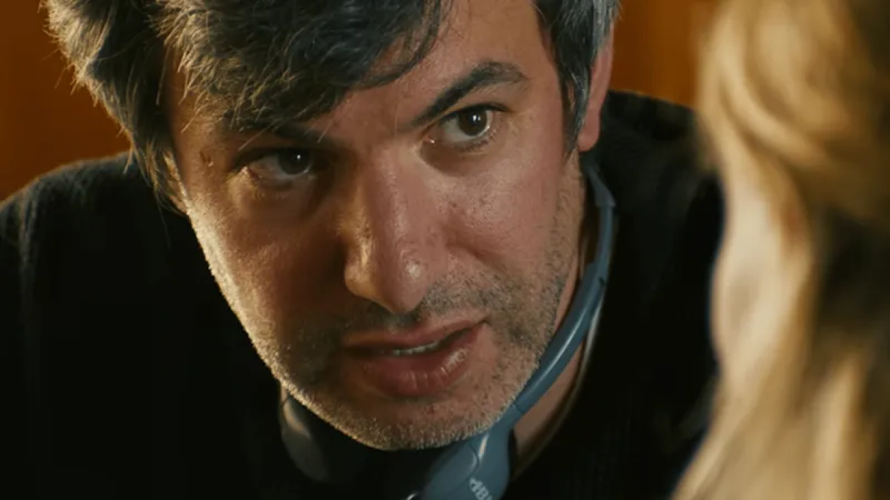
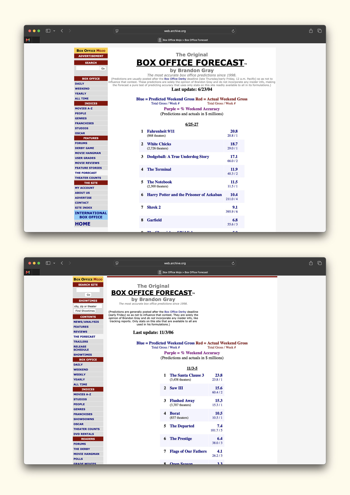

In the spring of 2004, Fahrenheit 9/11 became the second documentary ever to win the Palme d’Or at Cannes—the first since Jacques Cousteau and Louis Malle’s The Silent World in 1956, and, more than twenty years later, still the last. It won without an American distributor. Disney had already forbidden its subsidiary, Miramax, from releasing the film. Michael Eisner’s veto had gone public weeks before the festival, and Moore’s movie arrived on the Croisette as an orphan—a Palme d’Or winner that, officially, no one in the United States could put in theaters.
The controversy did the marketing. The Weinsteins bought the rights back from Disney through a hastily assembled company and handed distribution to Lionsgate and IFC, and within weeks of Cannes the film had a date. It was an anti-Bush polemic dropped into the heart of an election year, and every column written to denounce it doubled as an advertisement.
By the time it opened on June 25—barely a month after the Palme—it played less like a movie than a verdict the whole country was waiting to argue about. Lionsgate put it in 868 theaters, a number that made little sense by the conventions of the day. The year’s beloved indies were opening on single digits and crawling outward from there: Napoleon Dynamite bowed on six screens that same June, Garden State would open on nine in July. A real summer release, meanwhile, meant thousands—White Chicks took 2,726 theaters that very weekend, and Spider-Man 2 would open on more than four thousand the next. Fahrenheit 9/11 belonged to neither camp.
It opened to $23.9 million and became the first documentary ever to open at number one. Its massive $27,558 per theater average was the best average of all of 2004, ahead of The Passion of the Christ and Shrek 2, each playing three and four times the screens. It finished at $119.2 million, a documentary record that still stands. You could argue Moore had been campaigning for it since the 2003 Academy Awards, where he collected Best Documentary for Bowling for Columbine and used the stage to denounce the country’s leadership—a speech delivered days into the Iraq War, to boos and cheers in equal measure. Fahrenheit 9/11 earned zero nominations but made up for it in box office.
Two years later, Borat arrived the same way, through a festival. Sacha Baron Cohen had spent years building the character on Da Ali G Show, and by the fall of 2006 he was everywhere in costume, conducting press as Borat, staging stunts, drawing lawsuits, prompting the government of Kazakhstan to file formal complaints. The movie premiered at Toronto in September and became the sensation of the festival—Cohen arriving at the Ryerson on a wooden cart pulled by six women dressed as Kazakh villagers, a line around the block, and then the projector breaking twenty minutes in, Cohen vamping through an impromptu Q&A in character. It was the hottest ticket of the fall before most of the country had seen a frame.
Fox was behind the film, but as the release approached, the studio lost its nerve. When Borat stopped tracking outside the big cities, Fox cut the opening to 837 theaters. But rather than dampening the film, it concentrated it, turning a defensive retreat into the image of ferocious, can’t-get-a-seat demand. Borat opened to $26.4 million—north of $31,000 a theater, breaking the record Fahrenheit 9/11 had just set for the biggest debut under a thousand screens—and the next weekend, pushed out past 2,500 theaters, it did the thing movies almost never do. It went up, climbing roughly 10% even as it tripled its own footprint. It finished at $128.5 million.
Borat vs. Fahrenheit 9/11 showdown
This is very rare. The thing these two films did—eight hundred-odd screens running at blockbuster heat—is close to a category of two. And the theater count strategy was more or less an accident, when a movie got hot enough and strange enough that the usual two settings simply didn’t fit. In twenty years, almost nothing else has managed it. Which is the only honest frame for what opens on Friday.
You Can See Everything, A24’s Nathan Fielder documentary, splits the difference between its two ancestors. It is, like Fahrenheit 9/11, a documentary—nonfiction, the lowest-ceilinged category at the box office. But it is also, like Borat, the delivery system for a comedian/character who has been gestating for more than a decade. Nathan Fielder is a persona built patiently across Nathan For You and The Rehearsal.
Like both before it, it made its splash at a festival. You Can See Everything premiered, unannounced, at Telluride—A24 slipping it onto the schedule as a surprise—and the room reportedly came apart. A teaser dropped and curdled into a meme before anyone had the context to understand it. And now it opens Friday, October 16, in 855 theaters—the same footprint as its two ancestors, though this time chosen rather than stumbled into—with projections in the $8-to-$10 million range. For a documentary, that is already a terrific weekend—somewhere around $10,000 to $12,500 a screen.
I dug into Box Office Mojo’s old forecasts—the column Brandon Gray had been publishing since the site’s early days, about as close to an industry consensus as the era produced. On Fahrenheit 9/11, Gray was pretty dead-on. He called it for $20.8 million and first place, and it did $23.9 million. A three-million-dollar miss on a movie whose firestorm you could see coming a year out. Borat was less obvious, and clearly more of a breakout. Gray had it ranked fourth in his forecast, at $10.5 million, behind The Santa Clause 3, Saw III, and Flushed Away. It opened to $26.4 million and number one—more than double his figure, ahead of every title he’d ranked above it.

The industry projections for You Can See Everything this week—$8 to $10 million—sit right where Gray had Borat. The comparison the discourse keeps reaching for is Melania, this year’s other documentary breakout, which opened to $7.2 million in late January and took the headline for the best doc debut in a decade. But Melania was a different kind of release. That $7.2 million came spread across 1,778 theaters—under $4,000 a screen—and it fell 67% the next weekend before all but disappearing. You Can See Everything aims for the reverse: fewer screens, running far hotter, with room left to grow.
Coming off the summer of Obsession, Backrooms, and The Odyssey, You Can See Everything feels perfectly poised in that lineage—epic in scale, with something close to The Odyssey’s runtime, and yet as inherently internet-native as Obsession and Backrooms.
You Can See Everything opens the same week Christopher Nolan’s The Prestige turns twenty—his film about two magicians destroying each other over a single trick, the one that opens by asking, “Are you watching closely?” The Prestige was still on the chart the weekend Borat detonated. Two decades on, we’ve got a comedian who has spent ten years erasing the line between the bit and the truth, making a documentary about Elizabeth Holmes—one of the most convincing illusionists of the last decade.
Here are our predictions for the weekend—the odd outlier surrounded by safe bets likely to underperform, with Street Fighter, Whalefall, and Sense and Sensibility cast in the roles of The Santa Clause 3, Saw III, and Flushed Away.
| 1 | Street Fighter | $21.8M |
| 2 | You Can See Everything | $16.7M |
| 3 | Whalefall | $12.1M |
| 4 | Other Mommy | $11.0M |
| 5 | Verity | $6.6M |
| 6 | Sense and Sensibility | $6.5M |
| 7 | Resident Evil | $5.1M |
| 8 | Heart of the Beast | $4.0M |
| 9 | Forgotten Island | $2.4M |
| 10 | The Social Reckoning | $2.4M |